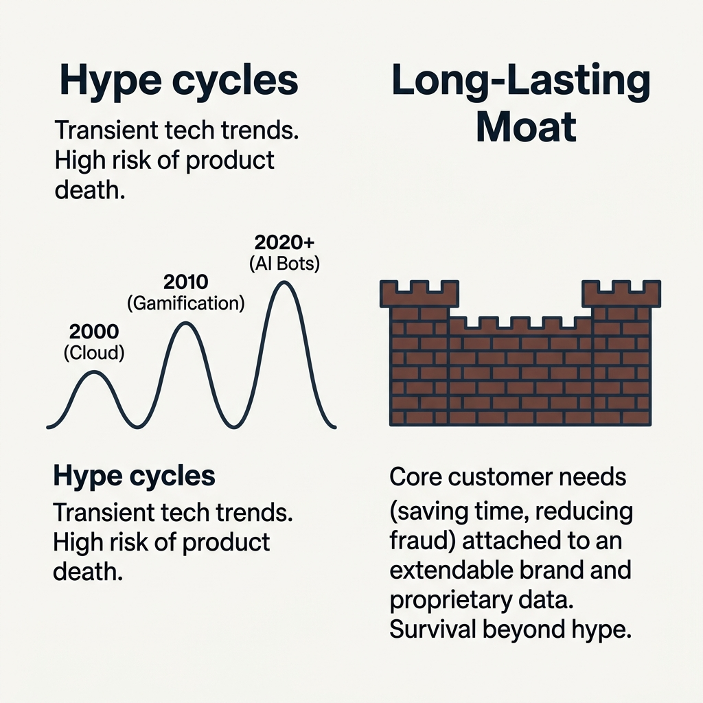
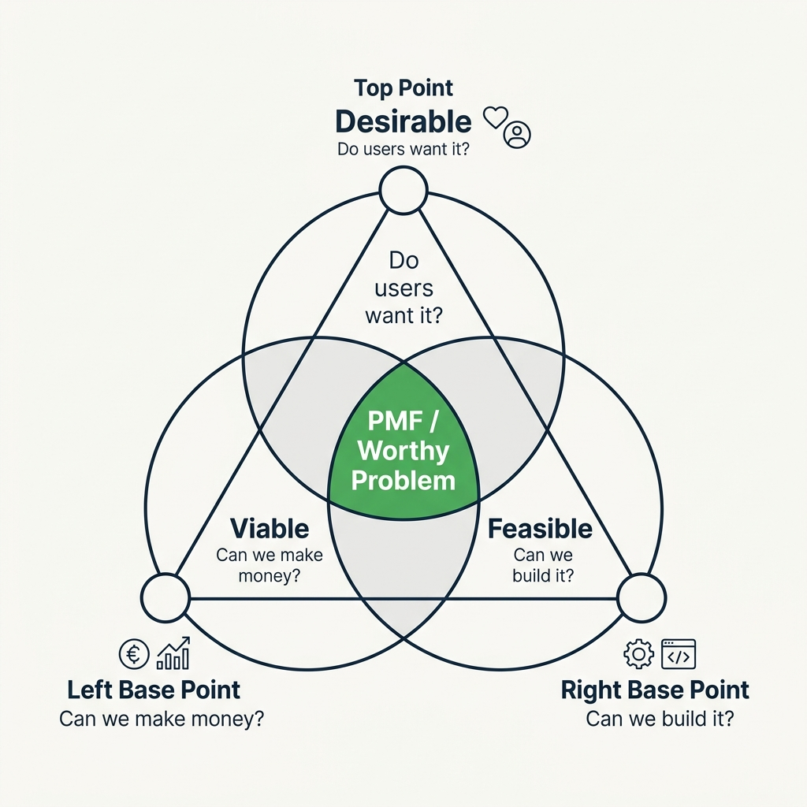
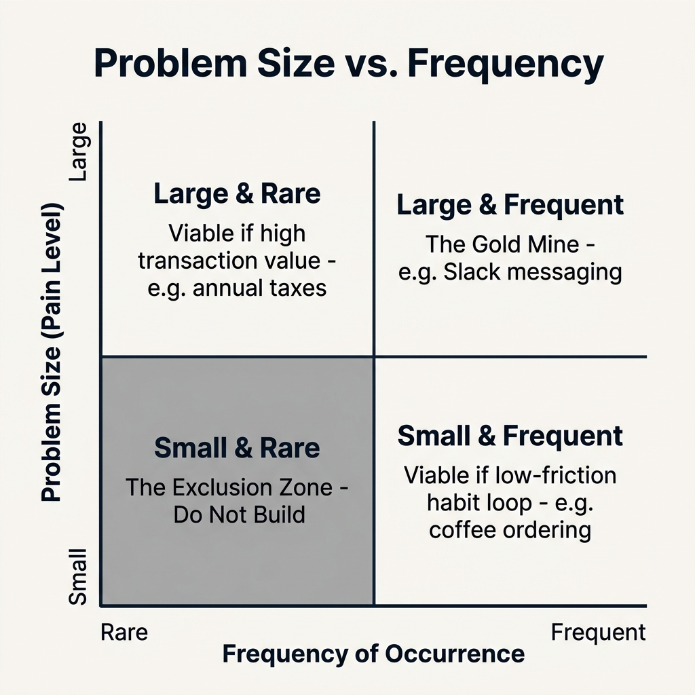
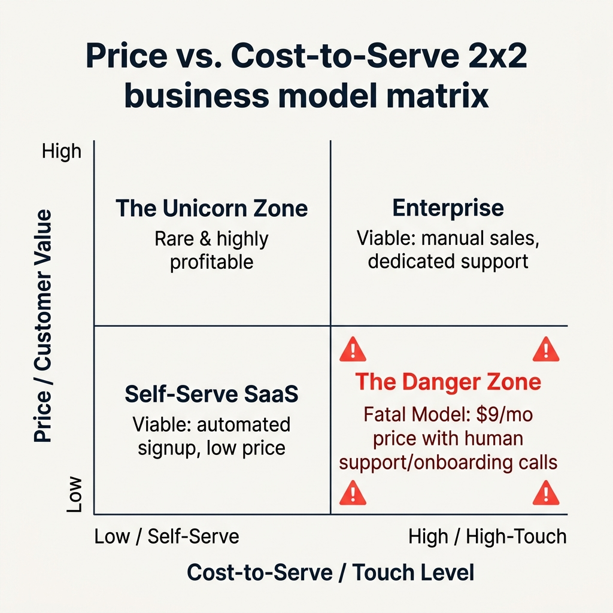
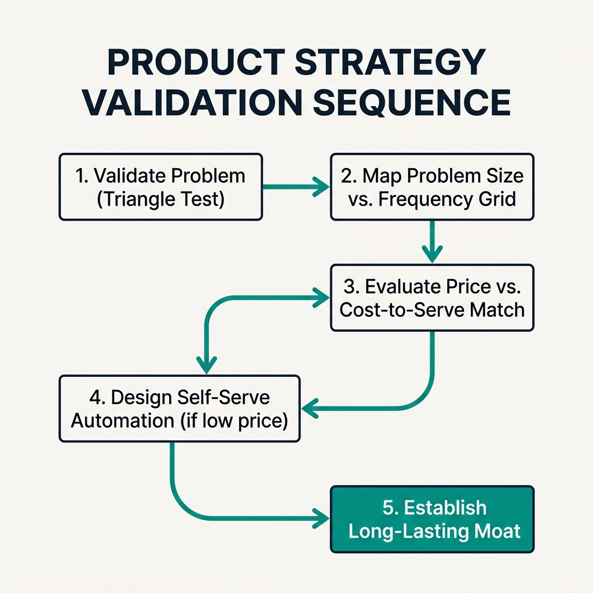

Your goal
Analyze business viability using strategic checks, map customer needs on the Problem Size/Frequency grid, align price with touch-level onboarding cost, and design self-serve loops to avoid the Danger Zone.
Lecture overview
Product strategy is not just about organizing features; it is about ensuring your product has a viable commercial future. This lecture examines how to evaluate and de-risk your product strategy early to protect your company from failure.
Central argument
A product strategy must be validated early because commercial failure is the default state for most companies. To survive beyond a single hype cycle, PMs must ensure they are solving a significant problem in a growing market, backed by an extendable brand and a defensible moat. Problems must satisfy the Desirability-Viability-Feasibility triangle, targeting either large frequent pain points or high-value rare events. Finally, the business model must align pricing with support touchpoints, avoiding the fatal "danger zone" of low-priced services burdened by high human cost-to-serve sales and onboarding models.
1. The Strategic Jigsaw Puzzle
To survive beyond temporary technology waves (gamification, cloud, AI bots), PMs must assemble a four-part jigsaw puzzle:
- Significant Problem: Solving a real, validated customer pain point.
- Growing Market: Operating in an expanding, not shrinking, segment.
- Extendable Brand: Establishing a brand that can logically adapt and host adjacent products.
- Long-Lasting Moat: Building structural defenses (network effects, switching costs) to protect market share.

2. The Triangle Test
Verify that your problem satisfies the validation triangle:
- Desirable: Do users want it? Is there real demand?
- Viable: Can it make money? Is there a sustainable business model?
- Feasible: Can it be built? Are there technical, resource, or legal constraints?

3. The Problem Size vs. Frequency Grid
Map needs by size (pain level) and frequency:
- Large & Frequent: The Gold Mine (ideal priority).
- Big & Rare: Viable if you charge premium transaction prices (annual taxes).
- Small & Frequent: Viable if you build a low-friction habit loop (coffee ordering).
- Small & Rare: Exclusion zone. Do not build.

4. The Price vs. Cost-to-Serve Matrix
Ensure pricing aligns with Touch Level (human intervention costs):
- Low Price / Low Touch: Viable (self-serve SaaS, automated signup).
- High Price / High Touch: Viable (enterprise contracts, dedicated account managers).
- Low Price / High Touch: **The Danger Zone (Fatal Model).** Charging low subscription fees but requiring manual human onboarding/sales calls leads to financial failure.

Practical Product Management example
Situation
A startup is building a database monitoring tool for independent developers. The product is priced at $12 per month. However, because database configurations are highly fragmented, 40% of signing users experience configuration errors during setup and require a 30-minute video support call with a customer success engineer to get onboarded.
Decision
The PM maps the product on the Price vs. Cost-to-Serve Matrix. Price: Low ($12/month). Cost-to-Serve: High (requires 30 minutes of human engineering time per setup). The PM diagnoses this as operating in The Danger Zone. They halt marketing campaigns and pivot the product strategy. The engineering team is tasked with building an automated diagnostics wizard (self-serve debugger) that detects database configuration errors and suggests fixes automatically inside the UI.
Reasoning
Charging $12/month does not cover the salary costs of engineers doing 30-minute onboarding support calls. Rather than raising prices (which would alienate independent developers) or ignoring support (which would drive high customer churn), the PM must reduce the Cost-to-Serve. Transitioning from high-touch support to a low-touch self-serve debugger moves the product back into the viable Low Price / Low Touch quadrant.
Consequence
The automated diagnostics wizard resolves 85% of configuration support tickets automatically. The onboarding call rate drops from 40% to under 2%. The customer acquisition and onboarding cost drops to near-zero, allowing the startup to scale profitably at the $12 price point.
Transferable lesson
Ensure your sales and support models align with your pricing. If you charge a low price, your product onboarding and support must be self-serve and automated. High touch requires high pricing.
Common misunderstandings
"Any problem that users complain about is worth solving"
Correction: Users complain about many small, rare problems. If you build solutions for every minor complaint, you will create a bloated product that is expensive to maintain. Focus engineering resources only on problems that meet the Triangle Test and fall into viable size/frequency quadrants.
"We can solve the Danger Zone business model by hiring cheaper support staff"
Correction: Cheaper support staff may reduce hourly costs, but they do not solve the underlying structural issue of human support scaling linearly with a low-price product. True scalability at a low price point requires product-led, automated self-serve solutions, not human scaling.
"We should build our strategy around the latest market trends to look innovative"
Correction: Trends and hype cycles change rapidly. If you build your core strategy purely around a temporary trend (like gamification in 2010), you will struggle to adapt when the market moves on. Build your strategy around solving a timeless, significant customer problem, using modern technologies merely as tools to solve it.
Key concepts and definitions
- Triangle Test: A validation model assessing whether a product idea is Desirable, Viable, and Feasible.
- Cost-to-Serve: The total resource overhead (human time, support, infra) required to onboard and maintain a customer.
- Danger Zone: A non-viable business model charging low prices while incurring high human sales/support touch points.
- Strategic Moat: Defensive advantages (e.g., network effects, switching costs) that protect a product from competitors.
- Hype Cycle: Temporary waves of market excitement around emerging technologies that PMs must look past to find real value.
Key takeaways
- Strategic failure kills companies; evaluate viability early using the jigsaw puzzle parameters to survive.
- The Triangle Test balances Desirability (customer demand) with Viability (money) and Feasibility (buildable).
- Map problems by size and frequency; solve large frequent problems or high-value rare events, and exclude small rare items.
- Align Price and Cost-to-Serve; low-price products must rely on low-touch automated self-serve flows.
- Avoid the Danger Zone of low pricing combined with high-touch human onboarding and sales.
- Look past hype cycles (gamification, bots) to solve permanent customer problems that support long-term moats.
- Scale business models like software: keep human intervention costs minimal for low-tier price accounts.
- Extendable brands and defensible moats are necessary components of long-term strategic success.
Visual summary

One-minute review
Run the Triangle Test: Verify that customers want it (desirable), you can build it (feasible), and it makes financial sense (viable). Target the Right Quadrant: Build solutions for frequent problems or rare high-value events. Leave small, rare problems alone. Balance the Sales Model: Automate onboarding and support for low-price products. High touch requires high pricing; avoid the Danger Zone.
Interactive Practice
Examine the four elements of the strategic jigsaw puzzle. Click on the tabs below to explore how they de-risk long-term product viability.
Significant Problem
Definition: A validated, painful problem that users feel frequently or represents a high-value rare event.
Validation Tool: The Desirability-Viability-Feasibility Triangle Test.
Risk: Solving small, rare issues that users don't care enough to pay for.
Growing Market
Definition: Operating in a user segment where customer density and demand are expanding.
Importance: A rising tide lifts all boats. Solving problems in shrinking markets leads to customer exhaustion.
Check: Verify customer segment indicators and growth rates over a 3-year timeline.
Extendable Brand
Definition: Establishing a company brand identity that can logically adapt and host adjacent products.
Example: Uber expanding from UberBlack (luxury cars) to UberX (taxis) to UberEats (deliveries).
Risk: Scoping a brand name too narrow (e.g. "DirectBlackCarCalls") preventing innovation.
Long-Lasting Moat
Definition: Structural barriers that make it difficult for competitors to steal your market share.
Mechanisms: Network effects (more users = more value), high switching costs (hard to migrate database), proprietary data.
Goal: Outlast single technology waves and hype cycles.
Apply sales model and problem size math. Review the scenarios below and select the correct strategic path.